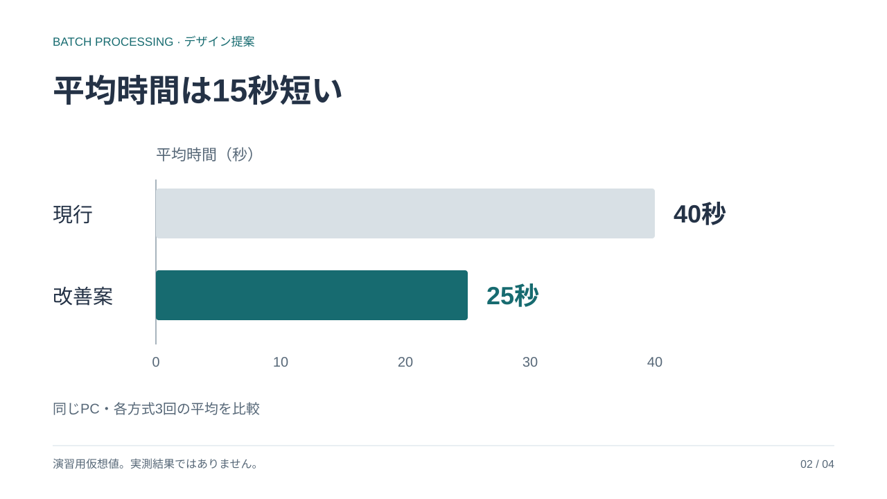

01 · 比較の前提同じ条件で比較する
02 · 結果平均時間は15秒短い
03 · 限界実運用の効果は未検証
04 · 次の行動測定条件をそろえる
固定のキャンバス全体を縮小します。開き方に合わせて文字や配置を組み替えません。
下の図は表示方針を示すSVGモックです。製品HTMLの修正結果や実ブラウザの検証証拠ではありません。
同じ原図を二つの幅で表示します。選択したページの配置・改行・文字の比率は共通です。

広い表示：原図1280×720を枠に合わせて等比表示。
狭い表示：同じ原図を等比縮小。本文とフッターを分離。
大きく開く・原図を保存比較結果は棒グラフを主役にし、説明文は要点を示す一文に絞ります。正確な値の対照には表、手順や関係には図など、伝わりやすい表現を選びます。詳細は説明・原稿へ置き、単位や条件はスライドに残します。
旧例の最終ページにあった結果の繰り返しは前のページへ集約。限界と次の行動は別ページにします。
この例は3枚から4枚へ。枚数の少なさより、聞き手が一つずつ理解できる順序を優先します。固定の構成テンプレートにはしません。
03：今回の数値は比較方法を説明する仮想値のため、実運用の短縮効果はまだ確認できません。この限界を押さえてから、次のページで測定条件の提案へ進みます。
04：入力データの量、測定の開始・終了、繰り返しの条件をそろえる提案です。詳しい測定手順は原稿へ置き、スライドでは三つの確認項目の関係を図で示します。
実際の審査結果は生成したHTMLと同じ版に紐付けます。以下は結果の表示形式の例です。
| 確認すること | 記録の例 |
|---|---|
| 見た目 | 対象：S04 / 本文とフッター 表示：レビュー内・狭幅 判定：要修正 → 修正後に実描画で再確認 |
| ページの要点 | 対象：旧S03 理由：比較結果・限界・次の行動が混在 修正：結果の重複を整理し、限界と次の行動を分離 |
| 視覚表現と文章量 | 対象：S02 / 比較グラフと見出し 確認：棒の長さが40秒と25秒に対応し、一文で差が伝わるか。図表と同じ内容を長文で繰り返していないか。単位・条件・仮値を残しているか。 判定：審査待ち（モックのため未実施） |
| 全体の流れ | 比較の前提 → 結果 → 限界 → 次の行動 原稿のつなぎと持ち時間も再確認 |
「このページで伝えたいこと」を一文で言えるか。見出しと強調は、その一文を示しているか。
重大指摘が残る場合や実表示を確認できない場合は、完成/確認済みにせず、要修正/審査待ちと表示します。証拠・確認環境・対象版は折りたたみで確認できる提案です。
説明・発表原稿・出典・箇所コメントの既存機能は維持します。表示比較の数値は既存サンプルの演習用仮想値です。実装承認は、このモックの閲覧では記録されません。